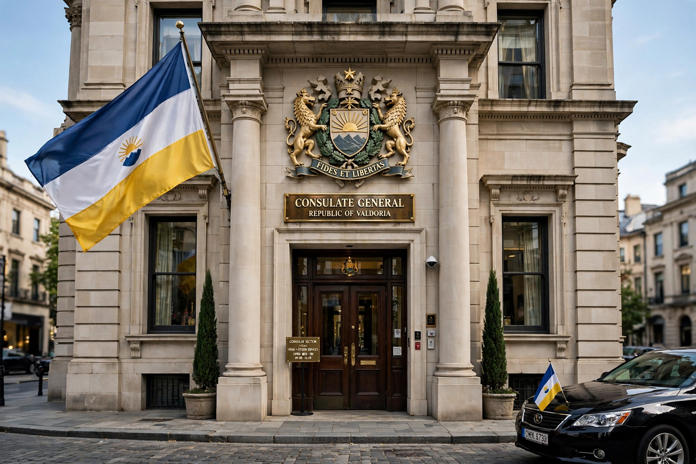

Consulate

A consulate is a diplomatic mission of a state located in a city outside the capital of the receiving state, headed by a consul and distinct from an embassy. Consulates primarily assist and protect the sending state's nationals abroad, issue visas and travel documents, and promote trade and cultural relations. Their functions are codified in the Vienna Convention on Consular Relations of 1963.
Functions
Consular services include issuing and renewing passports, assisting citizens who are arrested, ill, destitute or deceased abroad, registering births and marriages, notarising documents, and issuing visas to foreign nationals wishing to travel to the sending state. Consulates also support commercial relations and may help companies with market information. Unlike embassies, consulates do not conduct the main political relationship between the two states, which remains the ambassador's role in the capital.
Types and staff
The senior post in a major city is a consulate-general, headed by a consul-general; smaller posts are consulates, vice-consulates or consular agencies. Many states also appoint honorary consuls — often local residents or businesspeople — who provide limited services in places without a career consulate. Consulates-general are common in major commercial centres such as New York, Hong Kong, Istanbul and Frankfurt, sometimes rivalling embassies in size.
Status
Consular premises and archives enjoy limited inviolability under the 1963 Convention, and consular officers have functional immunity for acts performed in their official capacity — narrower than the personal immunity of diplomats. A consul is accredited through an exequatur granted by the receiving state. Where no diplomatic relations exist, consulates (or consular sections) may still operate by agreement. See also Diplomatic mission and Diplomatic rank.